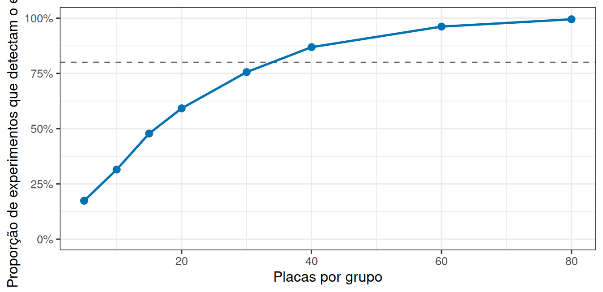
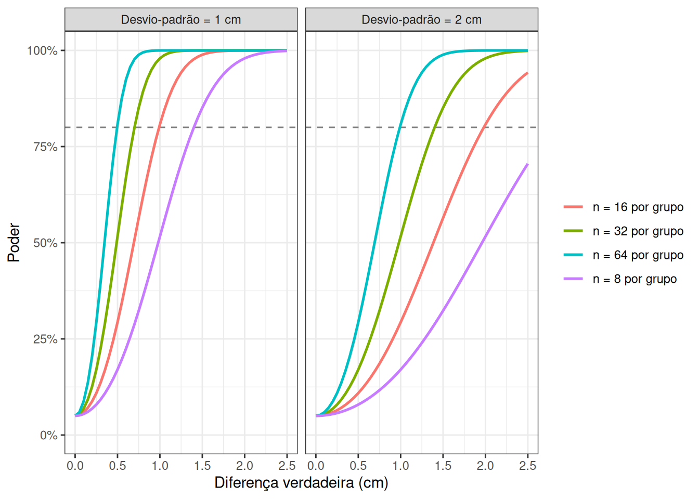
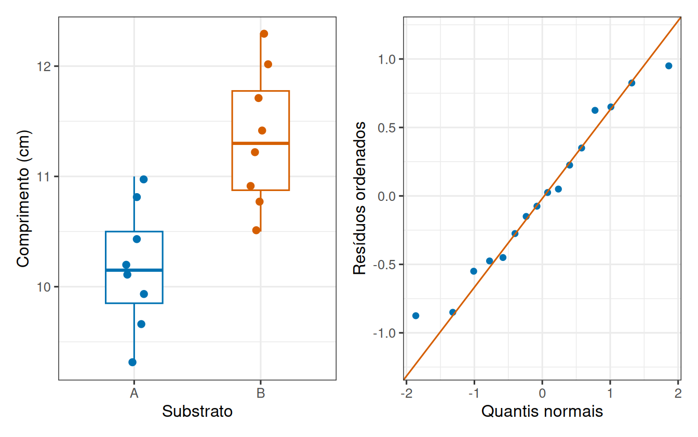

Um experimento compara dois substratos para o assentamento de larvas de mexilhão. Doze placas recebem cada substrato, sorteadas, e ao fim mede-se o comprimento médio dos indivíduos em cada placa. A diferença observada entre as médias é de 1,4 cm.
A partir daí toma-se uma decisão: anunciar um efeito, ou não anunciar. E como a decisão se apoia em dados que variam, ela pode estar errada de duas maneiras diferentes.
Esta leitura trata dessas duas maneiras, e de uma pergunta que costuma ser esquecida na hora de planejar um estudo: este experimento seria capaz de detectar o efeito que eu procuro?
2 Duas maneiras de errar
Alarme falso. Não há efeito, mas a amostra sorteada produziu uma diferença grande e concluímos que há. É o erro tipo I. Sua frequência é controlada pelo limiar escolhido: usar 5% significa aceitar cerca de 5% de alarmes falsos quando o efeito não existe.
Efeito perdido. Há efeito, mas a diferença observada não se destacou o suficiente do ruído e não rejeitamos a hipótese nula. É o erro tipo II.
A capacidade de detectar um efeito que realmente existe é o poder do estudo.
As quatro combinações possíveis organizam o problema:
Estado do processo
Rejeitar \(H_0\)
Não rejeitar \(H_0\)
\(H_0\) verdadeira
Erro tipo I, probabilidade \(\alpha\)
Decisão correta, probabilidade \(1-\alpha\)
\(H_0\) falsa
Decisão correta, poder \(1-\beta\)
Erro tipo II, probabilidade \(\beta\)
\(\alpha\) e \(\beta\) são probabilidades condicionadas a estados diferentes do processo. Portanto, não devem ser somadas nem interpretadas como probabilidades de as hipóteses serem verdadeiras.
NotaOs dois erros não são simétricos
O erro tipo I você escolhe: ele é o limiar, e vale 5% porque alguém decidiu usar 5%.
O erro tipo II você herda do delineamento. Ele depende do tamanho do efeito, da variação entre unidades e de quantas unidades foram montadas, e ninguém o informa junto com o resultado.
Por isso o alarme falso é discutido o tempo todo e o efeito perdido quase nunca é.
3 Poder, e do que ele depende
Um estudo com poucas placas por grupo deixa o acaso produzir diferenças grandes com facilidade, e um efeito verdadeiro se perde no meio delas. É esse lado da decisão que vale medir antes de montar o experimento.
O poder é a probabilidade de o estudo detectar um efeito que de fato existe. Ele depende de três coisas:
o tamanho do efeito: efeitos grandes se destacam com facilidade, efeitos pequenos exigem estudos maiores;
a variação residual: quanto mais as placas diferem por razões que não são o tratamento, mais difícil enxergar o tratamento;
o número de réplicas: mais unidades experimentais tornam a estimativa mais estável.
Nenhuma dessas três quantidades aparece nos dados depois da coleta: todas precisam ser estipuladas antes. É por isso que o poder se estima por simulação, gerando dados sob um efeito conhecido e verificando com que frequência o teste o detecta.
Ver a lógica da simulação de poder
n <-15efeito <-1.4desvio <-2repeticoes <-1000detectar <-replicate(repeticoes, { grupo_a <-rnorm(n, mean =10.2, sd = desvio) grupo_b <-rnorm(n, mean =10.2+ efeito, sd = desvio)t.test(grupo_a, grupo_b)$p.value <0.05})poder_estimado <-mean(detectar)
A estrutura é a mesma da distribuição nula, com uma diferença essencial: aqui os dois grupos são gerados com médias diferentes, porque queremos saber o que acontece quando o efeito existe. Cada repetição pergunta se o procedimento rejeitou \(H_0\), e a média dos valores lógicos estima \(P(\text{rejeitar }H_0\mid H_A)\). Com 15 placas por grupo, esta execução detectou o efeito em 45% das vezes.
Repetindo o mesmo cálculo para vários tamanhos de amostra, obtemos a curva de poder.

Figura 1: Proporção de experimentos que detectam um efeito real de 1,4 cm, em função do número de placas por grupo. A linha tracejada marca 80%, um alvo usual no planejamento de estudos.
Repare no canto esquerdo da curva. Com 15 placas por grupo, o efeito de 1,4 cm foi detectado em cerca de 48% dos experimentos, embora ele exista em todos eles. Um estudo desse tamanho falha na maioria das vezes, e quando falha não produz nenhum aviso de que falhou.
AvisoO poder se decide antes, não depois
Calcular o poder faz sentido no planejamento, para escolher quantas unidades montar.
Calculá-lo depois, usando o efeito que foi observado, não acrescenta informação: apenas reescreve o valor de p obtido em outra escala.
3.1 O poder é uma superfície, não uma única curva
A curva anterior manteve fixos o efeito e a variabilidade. Como as três quantidades atuam juntas, convém expressá-las de uma só vez. O tamanho padronizado \(d=\Delta/\sigma\) expressa a diferença relevante \(\Delta\) em unidades do desvio-padrão, e é ele, não a diferença bruta, que determina a dificuldade da detecção: um efeito de 1 cm é fácil de detectar quando \(\sigma=0{,}5\) cm e difícil quando \(\sigma=3\) cm.
Para uma aproximação normal de dois grupos balanceados, o poder pode ser escrito como
A expressão diz que a estatística \(Z\) continua tendo dispersão 1, mas passa a ser centrada em \(\Delta/(\sigma\sqrt{2/n})\) em vez de zero. Esse deslocamento é a relação sinal-ruído da comparação: aumenta com o efeito e com \(\sqrt n\), e diminui com a variabilidade. Quanto mais deslocada a distribuição, maior a parte dela que ultrapassa o valor crítico, e é essa parte que corresponde ao poder.

Figura 2: Poder aproximado de um teste bilateral para diferentes efeitos e desvios-padrão. Cada linha representa um tamanho de amostra por grupo.
Os dois painéis mostram o mesmo conjunto de tamanhos amostrais sob variabilidades diferentes. Com \(\sigma=2\) cm, a curva de \(n=8\) mal alcança 40% de poder para uma diferença de 1,5 cm, enquanto com \(\sigma=1\) cm o mesmo \(n\) já ultrapassa a marca de 80%. Reduzir a variação residual, por controle local ou por melhor medição, é portanto uma alternativa real a aumentar o número de unidades. A curva deve ser lida a partir da menor diferença cientificamente relevante, e não do efeito que seria conveniente detectar.
4 Não encontrar não é o mesmo que não existir
Daí a frase que vale guardar: ausência de evidência não é evidência de ausência.
Um estudo pequeno, com muita variação residual, quase sempre falha em detectar efeitos moderados. Concluir “o substrato não faz diferença” a partir dele é ir além do que os dados permitem. O que se pode dizer é que o estudo não teve sensibilidade suficiente para distinguir esse efeito do ruído.
É por isso que informar o intervalo de confiança da diferença é mais útil que informar apenas o valor de p. Um intervalo de \(-0{,}2\) a \(0{,}3\) cm diz que efeitos grandes foram descartados. Um intervalo de \(-3\) a \(4\) cm diz que o estudo não conseguiu descartar quase nada, ainda que os dois tenham produzido o mesmo “não significativo”.
5 O teste pronto faz a mesma pergunta
Simular a distribuição nula em cinco mil repetições responde à pergunta, mas ninguém faz isso toda vez que compara dois grupos.
Para essa comparação existe um procedimento pronto, o teste t, que chega ao mesmo lugar por um caminho matemático. Ele mede a diferença observada em unidades da incerteza dessa diferença, e devolve de uma vez o valor de p e o intervalo de confiança.
O que ele não faz é verificar se as unidades sobre as quais você o aplicou são de fato as unidades experimentais, nem se a variação usada como régua é a variação certa. Essa parte continua sendo sua.
5.1 Como o teste t constrói a régua
O teste t assume formas diferentes conforme o delineamento, mas todas seguem a mesma estrutura: uma diferença estimada no numerador, dividida pelo erro padrão dessa diferença no denominador. Vale percorrer os três casos que aparecem com mais frequência.
O caso mais simples compara uma amostra a um valor de referência \(\mu_0\), como uma concentração tolerada por norma ambiental. A estatística é
\[
t=\frac{\bar{x}-\mu_0}{s/\sqrt{n}},
\]
com \(n-1\) graus de liberdade. O numerador é a diferença estimada e o denominador é o erro padrão da média, que já conhecemos.
No caso pareado, as duas medições pertencem à mesma unidade, como comprimento antes e depois do tratamento. O truque é reduzir o problema ao caso anterior: definimos a diferença dentro de cada unidade, \(D_i=Y_{depois,i}-Y_{antes,i}\), e fazemos um teste de uma amostra sobre essas diferenças,
\[
t=\frac{\bar D-\mu_{D,0}}{s_D/\sqrt n}.
\]
O pareamento remove diferenças estáveis entre indivíduos quando a ligação é real, e é por isso que costuma ter mais poder. Tratar medidas pareadas como independentes desperdiça essa informação; parear observações de indivíduos distintos, ao contrário, cria dependência artificial.
Para dois grupos independentes, como as placas dos dois substratos, o numerador é a diferença entre as médias e o denominador precisa combinar a incerteza das duas. A versão de Welch usa
Como os dois grupos podem ter variâncias diferentes, os graus de liberdade deixam de ser um número inteiro simples e passam a ser aproximados pela equação de Welch-Satterthwaite:
Welch Two Sample t-test
data: substrato_b and substrato_a
t = 3.9743, df = 13.853, p-value = 0.001411
alternative hypothesis: true difference in means is not equal to 0
95 percent confidence interval:
0.5402536 1.8097464
sample estimates:
mean of x mean of y
11.350 10.175
A saída reúne, em um único bloco, a estatística, os graus de liberdade aproximados, o valor de p e o intervalo de confiança da diferença. Vale notar que o intervalo usa a mesma estimativa e o mesmo erro padrão do teste. Em um teste bilateral a 5%, rejeitar diferença zero equivale a obter um intervalo de 95% que não contém zero: as duas leituras são a mesma conta apresentada de dois modos. O intervalo acrescenta o que o valor de p não informa, que é a faixa de magnitudes compatíveis com os dados.
5.2 Variâncias iguais ou diferentes
Existe uma alternativa a Welch. Quando uma variância comum é justificável, ela pode ser estimada juntando os dois grupos,
e o erro padrão passa a ser \(s_p\sqrt{1/n_1+1/n_2}\), com \(n_1+n_2-2\) graus de liberdade. Essa versão agrupada é um pouco mais precisa, mas a precisão extra depende de a restrição de variâncias iguais ser plausível. Welch é uma escolha segura quando os tamanhos ou as dispersões diferem.
Surge então a tentação de decidir entre as duas versões com um terceiro teste. O teste F clássico para \(H_0:\sigma_1^2=\sigma_2^2\) usa
\[
F=\frac{s_1^2}{s_2^2},
\]
com \(n_1-1\) e \(n_2-1\) graus de liberdade. Ele é muito sensível à não normalidade, e testes baseados em desvios absolutos, como o de Levene, são mais robustos. Nenhum deles, porém, deveria decidir mecanicamente entre Welch e a versão agrupada: encadear testes faz o segundo herdar a incerteza do primeiro, e a decisão passa a depender de um valor de p obtido com pouca informação. Gráficos, conhecimento do processo e tamanhos de grupo informam melhor essa escolha.

Figura 3: Distribuições dos dois substratos e gráfico quantil-quantil dos resíduos do modelo de grupos.
Nesses dados, a razão entre as variâncias amostrais é 0,81 e o teste F devolve valor de p igual a 0,79. Os boxplots mostram dispersões semelhantes e o gráfico quantil-quantil não revela afastamento importante da normalidade. Com oito unidades por grupo, contudo, essa inspeção detecta apenas problemas grosseiros, o que reforça a recomendação de usar Welch por padrão.
5.3 Pressupostos e o que eles não cobrem
O teste t requer unidades independentes e respostas quantitativas. A suposição de normalidade se refere aos erros dentro de cada população, não aos dados brutos reunidos: com amostras moderadas, a média é robusta a desvios leves, mas assimetria extrema e valores influentes precisam ser investigados. Welch acomoda variâncias diferentes, mas não corrige dependência, viés de seleção nem pseudorreplicação. Um teste aplicado a subamostras continua devolvendo um valor de p pequeno, calculado sobre a régua errada.
6 Planejar antes, relatar depois
Reunindo as duas metades da leitura, o planejamento de um estudo exige definir antes da coleta uma diferença mínima cientificamente importante, uma estimativa realista da variação, o nível \(\alpha\), a lateralidade do teste e o número de unidades independentes. Aumentar \(\alpha\) eleva o poder à custa de mais alarmes falsos. Reduzir variação por controle local ou melhorar a medição pode ser tão útil quanto aumentar \(n\). O planejamento deve ainda considerar perdas de unidades e nunca usar o efeito observado no próprio estudo como substituto da diferença relevante.
A decisão que abriu esta leitura, anunciar ou não um efeito de 1,4 cm, continua sendo uma decisão sujeita a erro. O que mudou é que agora os dois erros têm nome, e apenas um deles é escolhido por quem analisa. O outro foi decidido quando alguém escolheu quantas placas montar, e permanece invisível no resultado a menos que seja calculado de propósito.
7 Para saber mais
Gotelli e Ellison (Gotelli e Ellison 2015) discutem poder, tamanho de efeito e planejamento no contexto de estudos ecológicos, com exemplos de campo próximos aos desta unidade curricular.
DicaPara pensar
Um estudo com 5 placas por grupo obtém valor de p igual a 0,30. Isso demonstra que o substrato não tem efeito?
Dois estudos encontram a mesma diferença de 1,4 cm, mas um usa 10 placas por grupo e o outro usa
Por que os valores de p serão diferentes?
8 Referências
Gotelli, Nicholas J., e Aaron M. Ellison. 2015. Princípios de Estatística em Ecologia. Artmed.